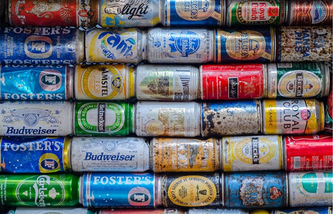

Os metais são elementos químicos, sólidos e cristalinos a temperatura ambiente (com exceção do mercúrio, encontrado em estado líquido), caracterizados por algumas propriedades específicas, tais como: a) condutibilidade elétrica e térmica; b) maleabilidade; c) ductibilidade; d) dureza; e) brilho. Os metais são utilizados nas indústrias para a fabricação de inúmeros itens, desde latas e embalagens até móveis, instrumentos musicais e peças automotivas.
O processo de reciclagem do metal depende primeiramente das fases de coleta e separação dos materiais. Os resíduos metálicos coletados são separados nos centros de triagem entre ferrosos e não ferrosos e também por tipo e características (alumínio, cobre, ferro, aço, etc.). Como os metais ferrosos possuem propriedades magnéticas, sua separação dos demais resíduos pode ser feita por meio do uso de eletroímãs. Os resíduos já separados são prensados, classificados e encaminhados para as estações de reciclagem específicas. Nessas estações os resíduos são livrados das impurezas, triturados, derretidos e transformados em novos produtos.